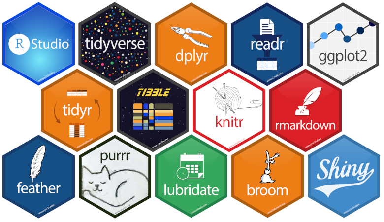

ANÁLISIS DE DATOS CON R

Este es un curso que forma parte del programa de desarrollo de capacidades y entrenamiento en Análisis de datos de The Nature Conservancy bajo el marco del proyecto Por la Pesca.
El curso esta diseñado para un entrenamiento intensivo de corta duración (1 semana) el cual tiene como objetivo brindar una introducción breve a los principios de la ciencia de datos desde la recolección de información del ambiente hasta reportar los análisis en diferentes formatos (word, html, pdf). Los datos empleados estan orientado a temas marinos. Sin embargo, la forma lógica de programación del presente curso puede ser empleado en diferentes ámbitos. Aqui nos enfocaremos principalmente en las áreas de Programación computacional, Exploración de datos, Visualización y Documentación.
Cada una de las presentaciones del curso se iran añadiendo al final de cada sesión. Asi mismo, consultar el menú Setup para asegurarse de tener todos los requerimientos necesarios antes de iniciar el curso.

La forma de trabajo del presente curso estará basado en gran medida en el universo tidyverse el cual introduce una serie de paqueterías que proporcionan una sintaxis simple en la importación, procesamiento, visualización y documentación de datos.
Estructura del curso
El curso consta de 9 clases los cuales cubren los temas de Programación en R, Exploración de datos, Visualización y Documentación. Cada clase contiene ejercicios cortos que deberán ser resueltos de forma conjunta.
Temario
Software R project y R-studio
Primeras aproximaciones hacia el entorno de trabajo R-project y R-studio.
Clase 1Tipos de datos en R: Vectores
Familiarizar a los participantes con los diferentes tipos de datos existentes en R. Énfasis en el uso de vectores: Crear vectores, operaciones y extracción de elementos de interés.
Clase 2Tipos de datos en R: Matrices, listas y dataframes
Familiarizar a los participantes con los diferentes tipos de datos existentes en R. Énfasis en el uso de matrices, listas y dataframes: Generalidades y funciones relacionadas a cada tipo de dato.
Clase 3Operadores
Familiarizanos con los operadores aritméticos, relacionales, lógicos y de asignación que permitirán manipular y transformar datos de distintos tipos.
Clase 4Manipulación de datos: Importación
Introducción general a las diferentes librerías del universo tidyverse. Importar datos de fuentes externas. Uso de la libreríareadry sintaxis de sus funciones asociadas. Tipo de datos en formato tibble. Guardar y exportar datos.
Clase 5Manipulación de datos: Datos ordenados
Conceptos generales de una base de datos ordenada (tidy data). Reestructurar datos de formato ancho a formalo largo y viceversa. Uso de la libreríatidyry sintaxis de sus funciones asociadas. Separar y unir columnas; y cómo lidiar con los valores perdidos (NAs) o NULL.
Clase 6Manipulación de datos: Transformación
Aprender a manipular fechas con la libreríalubridate. Conocer los principios básicos dedplyrpara manipular, crear variables (filtrar, seleccionar, renombrar) y generar estadísticos descriptivos a nivel de grupos. Ventajas de usar el operador pipeline (%>%).
Clase 7Visualización de datos
Introducción a la gramática de gráficos mediante la libreríaggplot2. Principales gráficos empleados por los usuarios (diagrama de barras, histogramas, boxplots, gráfico de dispersión, etc).
Clase 8Documentación
Uso de Rmarkdown (.Rmd) para generar reportes en diferentes formatos (.pdf, .word, .ppt)
Clase 9